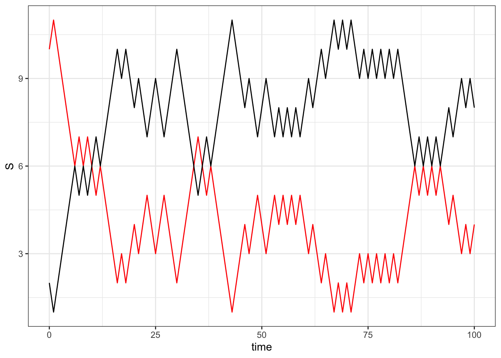
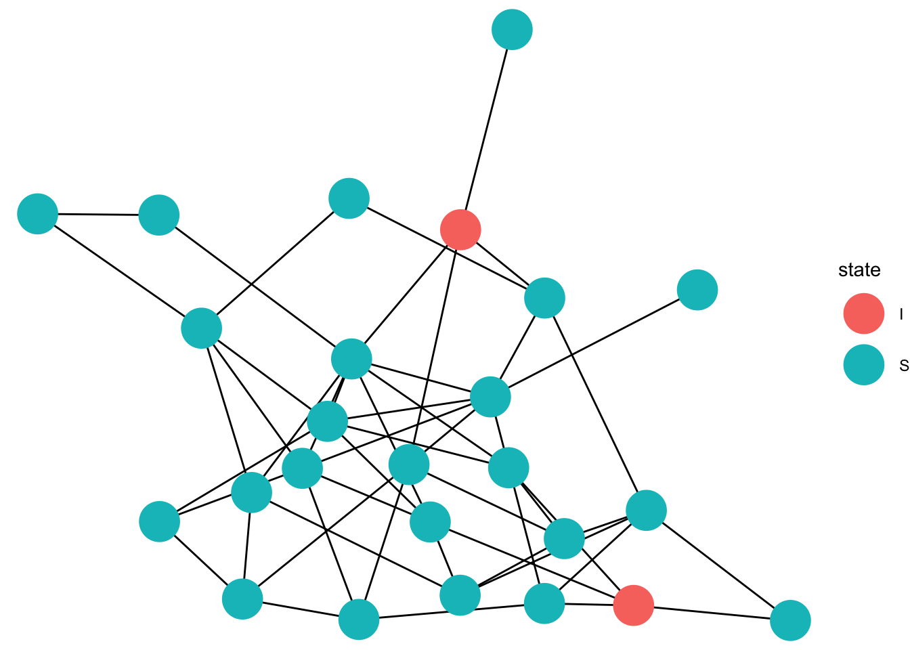

library(igraph)
library(ggplot2)
library(ggnetwork)
library(dplyr)
library(gganimate)The packages that you need
This is for my sake of actually learning how to make a stochastic SIS model.
The math
Assume we have an SIS model (Susceptible to Infected to Susceptible). Assuming we have constant \(N\) individuals in the population (no demography), there can be \(n\) number of infectious individuals. Therefore, for the susceptible population, \(S = N- n\) and for the infectious population \(I = n\) .
In a stochastic, markovian model. We can have individuals of both state transition like so:
\[ (S,I) \rightarrow (S-1, I + 1) , \]
where a susceptible individual becomes infected with the parameter \(\beta\) or:
\[ (S,I) \rightarrow (S+1, I -1), \]
where infected individuals recover at rate \(\gamma\).
For stochastic modeling, we use something called a master equation that can tell us how the state distribution varies over time (how individuals “jump” from one state to another).
If we’re interested in
Assuming, we are interested in looking the probability where \(n\) individuals are infected and we are interested what the next time step could be. We call this \(p_n (t)\).
Well, it could be that in a state where \(n-1\) individuals are infected, the infected individual infected one of the susceptible. This means that
\[ p_{n-1} \beta(n-1)(N-(n-1)) \Delta t \]
in English, the probability of being in the state where there are \(n-1\) infectious individuals that will then infect another individual which is the number of susceptibles (\(N-(n-1)\)) and infectious individuals (\(n-1\)).
Now it could be possible that there is the probability that susceptible individuals do not get infected and the infectious individuals have not recovered yet.
This means that the probability of no individual being infected is $ 1- P(an individual being infected)$, such that:
$$ p_n(1- (n(N-n)))
$$ And individuals that do not recover is:
\[ p_n(1-(\beta n(N-n)+\gamma n)) \Delta t \] Then we can have an individual recover:
\[ p_{n+1} = \gamma (n+1) \Delta t \] Putting this all together:
\[ p_n(t + \Delta t) = p_{n-1} \beta(n-1)(N-(n-1)) \Delta t+ p_n(1-(\beta n(N-n)-\gamma n)) \Delta t + \gamma (n+1) \Delta t \] We notice that we can convert this into a continous form by noting the \(p_n\) in the middle term.
\[ p_n(t + \Delta t) - p_n(t)= p_{n-1} \beta(n-1)(N-(n-1)) \Delta t -p_n(\beta n(N-n)+\gamma n)) \Delta t + \gamma (n+1) \Delta t \] We can then divide everything by the time step \(\Delta t\):
\[ \frac{p_n(t + \Delta t) - p_n(t)}{\Delta t}= p_{n-1} \beta(n-1)(N-(n-1)) -p_n(\beta n(N-n)+\gamma n)) + \gamma (n+1) \] And as \(\Delta t\) approaches infinity, we then have
\[ \frac{dP_n(t)}{dt} = p_{n-1} \beta(n-1)(N-(n-1)) -p_n(\beta n(N-n)+\gamma n)) + \gamma (n+1) \] With this master equation, we can simulate the model.
The Code
The Gillepsie method takes that master equation. Where we first simulate the time to the next event and figure out which event has occcured (infection or recovery). We use something called a Poisson process where we say there is a rate at which events happen but we want it to be random AND independent. The rate at which something happens in the system is what we described with the master equation. The poisson process is also useful because we also know the time to events.
Poisson (P_n) then the exponential waiting time is \((1- exp(P_n)t)\).
We can use a uniform distribution through something called:Inverse Transform Sampling.
# We create a susceptible and infectious vector and we will simulate for a 100 time steps
S = matrix(c(10,rep(0,100-1)), nrow = 100, ncol = 1 ) #susceptible individuals
I = matrix(c(2,rep(0,100-1)), nrow = 100,ncol = 1) #infectious individualsHere are the parameters:
beta = 0.1
gamma = 1/3
time = 0 for (i in seq(1,100)){
infection = beta * S[i] * I[i]
recovery = gamma * I[i]
total_rate = infection + recovery
random_number<- runif(2,min=0,max=1)
tau <- (1 /total_rate) * log(1 / random_number[1])
time = time + tau
rate_of_interest <- infection/total_rate
if(random_number[2] < rate_of_interest){
S[i+1] = S[i] - 1
I[i+1] = I[i] + 1
}
else{
S[i+1] = S[i] + 1
I[i+1] = I[i] - 1
}
}full_model<- cbind.data.frame(time = seq(0,100),Sus = S, Infect = I)ggplot(full_model, aes(x = time, y = S))+ geom_line(color = 'red') +
geom_line(aes(x = time, y= I),color = 'black')+theme_bw()
Doing this on a network
#let's say there are 10 individuals
graph = erdos.renyi.game(25,50 , type = "gnm", directed = FALSE)
V(graph)$label <- seq(1,25)
state = rep("S",25)
patient_zero = sample(seq(1,25),1)
state[patient_zero] <- "I"
time_list = NULL
for (i in seq(1,100)){
infection_propensity = NULL
recovery_propensity = NULL
inf_node <- which(state == "I")
recovery_propensity <- list(cbind(n= inf_node,rate=gamma))
neighbors <- neighbors(graph, inf_node )
for (n in neighbors){
if (state[n] == "S") {
infection_propensity[[n]] <- cbind(n,rate=beta)
}
}
full_infect_rate <- cbind.data.frame(do.call(rbind,infection_propensity),status = 'infect')
full_recovery_rate <- cbind.data.frame(do.call(rbind,recovery_propensity), status = 'recover')
events = rbind(full_infect_rate, full_recovery_rate)
total_rate <- sum(events$rate)
random <- runif(2)
tau <- -log(random[1]) / total_rate
cumulative_rate <- 0
selected_event <- NULL
for (event in seq(1,nrow(events))) {
cumulative_rate <- cumulative_rate + events$rate[event]
if (random[2] * total_rate <= cumulative_rate) {
selected_event <- event
break
}
}
time <- time + tau
if (!is.null(selected_event)) {
node <- selected_event
if (state[node] == "I") {
# Recovery event
state[node] <- "S"
} else {
# Infection event
state[node] <- "I"
}
}
time_list[[i]] = cbind.data.frame(time,state,node = seq(1,100))
}
full_time_list <- do.call(rbind,
time_list ) Animating it
full_graph<- fortify(graph)
full_spatial <-full_graph[,c('x','y','label')]
full_spatial<- full_spatial[!(duplicated(full_spatial)), ]
eep<- left_join( full_time_list ,full_spatial, by = join_by(node==label))
gg_anim <- ggplot(data=full_graph)+
geom_edges(aes(x = x, y = y, xend = xend, yend = yend),color = "black")+
geom_point(data = eep, aes(x =x, y=y,color = state),size =10)+
transition_states(time, state_length = 1)+
enter_fade() +
exit_shrink() +
ease_aes('sine-in-out',interval = 0.001)+theme_void()
animate(gg_anim, fps=5)
anim_save ('gganim.gif')